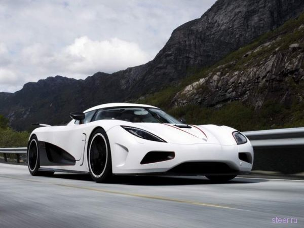
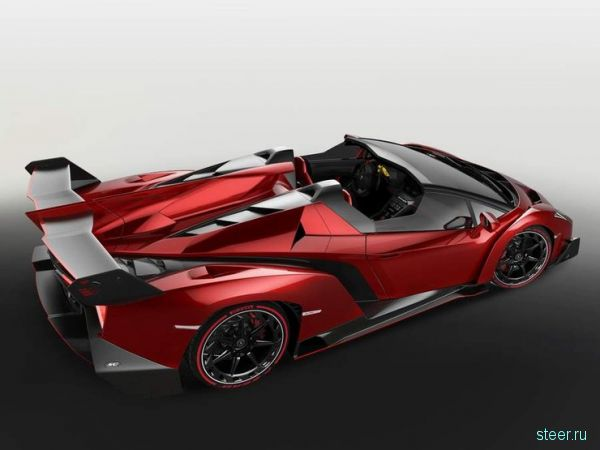
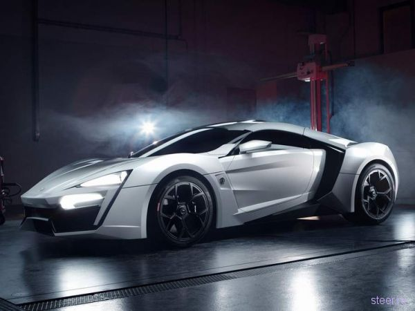
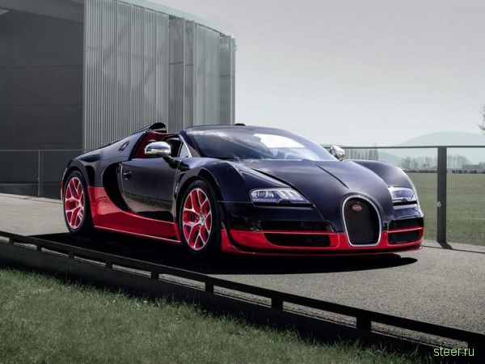
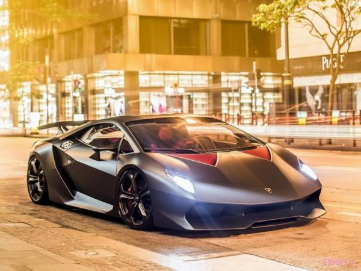
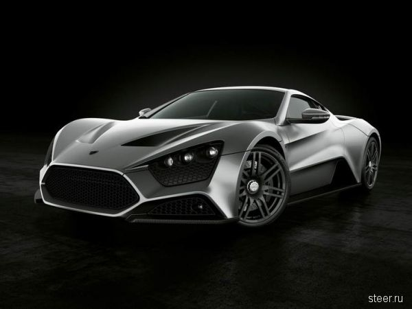
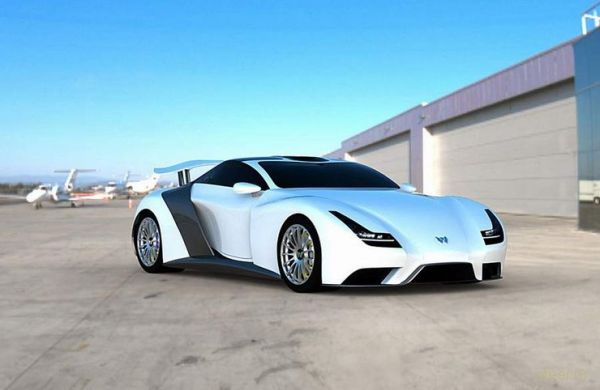
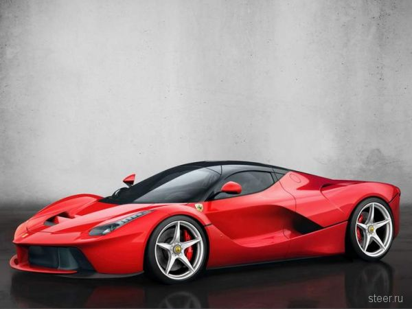
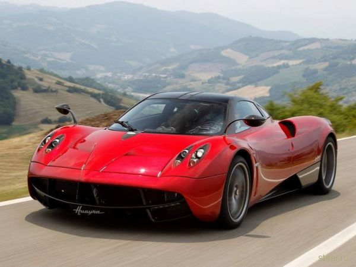

к вашему вниманию следующие авто:

Koenigsegg Agera R
В $1,6 млн оценил своё очередное творение — суперкар Koenigsegg Agera R — и «шведский Энцо Феррари» Кристиан фон Кёнигзегг. Машина является дальнейшим развитием модели Agera и отличается от неё более мощным (1140 л.с./1000 Н∙м) мотором. До первой сотни Koenigsegg Agera R разгоняется за 2,8 с, а максимальная скорость составляет 440 км/ч, что больше мирового рекорда, установленного Bugatti Veyron Super Sport. Правда, официально максималку Koenigsegg Agera R никто не регистрировал, так что оставим это утверждение на совести фон Кёнигзегга.

Lamborghini Veneno Roadster
Весной этого года на Женевском автосалоне Lamborghini представили суперкар Veneno, который поражал не только своим космическим внешним видом, но и ценой — $4.05 млн. Самое удивительное, что все три запланированных к производству экземпляра Lamborghini Veneno были проданы ещё до презентации машины в Женеве, что сподвигло итальянцев разработать открытую версию автомобиля, на которую повесили совсем уж неадекватный ценник в $4.47 млн. Таким образом, родстер Lamborghini Veneno стал самым дорогим серийным автомобилем в мире. Вернее, мелкосерийным, так как будет выпущено всего девять машин. И если цена Lamborghini Veneno способна удивить, то ее динамические характеристики сложно назвать выдающимися, особенно в сравнении с другими суперкарами — мощность двигателя составляет «всего» 750 л.с., на покорение первой сотни уходит 2,8 с (у родстера 2,9 с), максимальная скорость — 355 км/ч. В мире есть машины и быстрее и при этом в разы дешевле.

Lykan HyperSport
Это может показаться странным, но на третьем месте разместился представитель не Европы или Америки, а Ближнего Востока — ливанский суперкар Lykan HyperSport бейрутской фирмы W Motors. Арабский скакун создавался в кооперации с немецкой фирмой RUF, которая доработала для W Motors шестицилиндровый оппозитник Porsche, выжав из него 750 л.с. и 1000 Н∙м крутящего момента. Lykan HyperSport разгоняется до 385 км/ч и преодолевает первую сотню за 2,8 с. Но ценник в $3,4 млн обусловлен не столько высокими динамическими характеристиками, сколько использованием в отделке золота и бриллиантов. Плюс к этому каждому владельцу в качестве бонуса полагаются швейцарские часы Cyrus Klepcys стоимостью $200 000. Ливанцы планировали выпустить всего семь суперкаров, однако уже собрали более ста заявок, что, наверняка, заставит W Motors пересмотреть планы выпуска.

Bugatti Veyron
Только на четвертом месте находится гиперкар «всех времен и народов» бывший абсолютный рекордсмен практически по всем дисциплинам, включая цену, Bugatti Veyron. Вернее, его открытая, 1200-сильная модификация Grand Sport Vitesse. По заявлению разработчиков, этот автомобиль является самым быстрым серийным родстером в мире (максимальная скорость 408 км/ч) и до появления открытой модификации Lamborghini Veneno был ещё и самым дорогим — цена составляет без малого $3 млн. И это за «базовую» модификацию, в то время как штучные версии Bugatti Veyron Grand Sport Vitesse, носящие как правило имя собственное, стоят гораздо дороже.

Lamborghini Sesto Elemento
Замыкает пятерку самых дорогих автомобилей третий суперкар от Lamborghini — карбоновое произведение инженерного искусства — Lamborghini Sesto Elemento. Тираж 20 экземпляров, полностью карбоновый кузов с карбоновыми подрамниками и элементами подвески, 5,2-литровая «десятка» мощностью 570 л.с., разгон до первой сотни за 2,5 с, максималка 342 км/ч и цена в $2.56 млн.

Zenvo ST1
В десятку самых дорогих автомобилей планеты попал датский гиперкар Zenvo ST1 с ценником в $1,8 млн. Причем раньше датчане хотели продавать свой суперкар за немыслимые $3 млн, но быстро поняли, что с ценой они явно погорячились. Хотя машина у них получилась весьма экстремальная — семилитровую «восьмерку» General Motors снабдили турбокомпрессором и приводным нагнетателем, получив «на выходе» 1104 л.с. и 1430 Н∙м крутящего момента. Неудивительно, что первую сотню Zenvo ST1 разменивает за 2,9 с, а максимальная скорость ограничена на отметке 375 км/ч. Датчане изначально рассчитывали изготовить 15 штук Zenvo ST1, но, судя по всему, покупатели не спешат выстраиваться за ним в очередь.

Weber Faster One
Большие проблемы со сбытом своего суперкара Weber Faster One испытывает и швейцарская фирма Weber Sportcars. А всё потому, что у машины есть два существенных недостатка — цена в $1.62 млн и внешность, способная вызвать либо смех, либо слезы, в зависимости от настроения. Когда Weber Faster One ещё только был прототипом, над ним уже вовсю потешалась мировая автомобильная общественность, а сама машина сразу же была признана одной из самых нелепых в мире. Швейцарцы прислушались к критике и в этом году серьезно доработали дизайн, однако спорткар всё равно продолжает выглядеть как гаражная самоделка. Между тем, под неказистым кузовом скрывается весьма серьезная «начинка»: система полного привода, десятицилиндровый 5,6-литровый твин-турбо мотор мощностью 1200 л.с. (1250 Н∙м) с которым агрегатируется шестиступенчатая секвентальная полуавтоматическая КПП. Первую сотню Weber Faster One покоряет за 2,5 с и разгоняется до 400 км/ч.

Ferrari La Ferrari
На восьмой позиции расположился единственный гибридный суперкар в мировом рейтинге, новейший Ferrari La Ferrari стоимостью $1,6 млн. Гибридная силовая установка, состоящая из двенадцатицилиндрового 6,3-литрового мотора и электродвигателя, совокупной мощностью 963 л.с. (969 Н∙м), позволяет скакуну из Маранелло преодолевать первую сотню за 2,8 с и разгоняться до 350 км/ч. Тираж наследника Ferrari Enzo составит 499 штук, но чтобы дождаться заказанного автомобиля придется более полутора лет простоять в очереди.

Pagani Huayra
И замыкает десятку самых дорогих автомобилей мира итальянский гиперкар с немецким сердцем — Pagani Huayra. Как и предшественник — Pagani Zonda — новая машина получила мотор Mercedes AMG (6.0 л, V12) с двумя турбокомпрессорами, мощностью 739 л.с. (1000 Н∙м) и благодаря относительно небольшой массе в 1350 кг обладает незаурядными характеристиками — максимальная скорость составляет 375 км/ч, а на покорение первой сотни требуется 3,2 с. Машина снабжена активными аэродинамическими элементами, выполненными по типу самолетных закрылков, а её управляемость, по словам разработчика Горацио Пагани, близка к гоночным спортпрототипам. Тираж машины будет небольшой, но Пагани изначально планировал выпускать не более двадцати суперкаров в год по цене $1,34 млн за штуку.